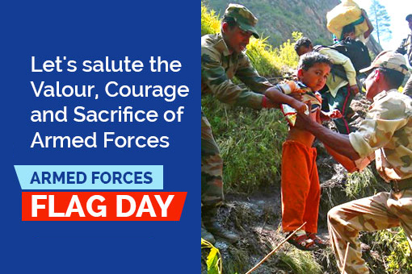
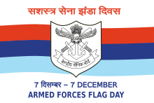

The Armed Forces Flag Day or the Flag Day of India, celebrated every year on 7th December, is a day dedicated to India towards collection of funds from people of India for the welfare of the Indian Armed Forces. It has been observed annually in India since 1949. Over the years, it has become a tradition to commemorate this day as an honour to the Army, the Navy and the Air Force of India. This day is mainly celebrated to honour the martyrs and the men in uniform who valiantly fought & continue to fight on our borders to safeguard the country's honour. Soldiers are one of the greatest assets of any country. They are the guardians of the nation and protect its citizens at all costs. To fulfil their duties, soldiers havesacrificed a lot of things in their lives. The country is forever indebted tothese gallant heroes who lay down their lives in the service towards the motherland.
Just after India achieved independence, a need arose for the government to manage the welfare of its defence personnel. On August 28, 1949, a committee set up under the defence minister decided to observe a Flag Day annually on December 7.
The idea behind observing a Flag Day was to distribute small flags to the general population and in return collect donations. Flag Day gains more significance as it considers that it is the responsibility of the civilian population of India to take care of the families and dependents of the armed forces personnel who fight for the country.
The flag is similar to that of the United Kingdom's Ministry of Defence, first utilised in 1956, and is a common colour-scheme in British-aligned territories, used by fellow Commonwealth members Cyprus, India, Kenya and Nigeria.
The Armed Forces Flag day is mainly observed to serve three basic purposes
-Rehabilitation of battle casualties.
-Welfare of serving personnel and their families.
-Resettlement and welfare of ex-servicemen and their families.
The Armed Forces Flag Day commemoration and the collection of funds through distribution of flags. It is a time for Indians to express its gratitude and appreciation to the current and veteran military personnel of India and to acknowledge those who died in service to the country.
On the Flag Day all three branches of the Indian armed forces, the Indian Army, the Indian Air Force and the Indian Navy, arrange a variety of shows, carnivals, dramas and other entertainment programmes to showcase to the general public the efforts of their personnel to ensure national security.